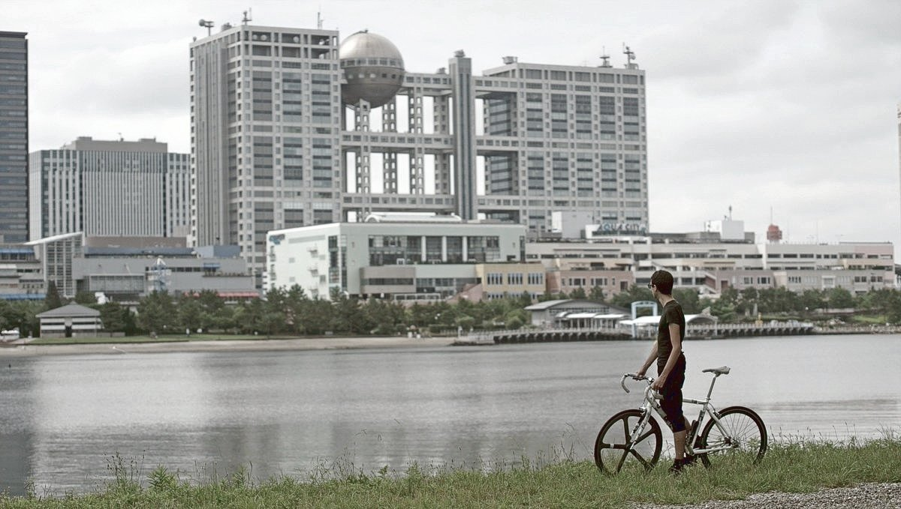
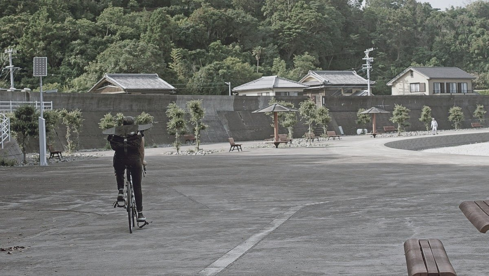

liveaboard
- cost of simplicity
- small space
- sewing
- cleaning products
- diy carbonation system
- privacy
- laundry
- moorage options
- tool box
- bikes
- winter insulation
- decorations
When living on the water, your home is always in motion, swaying with the currents and winds. Knowing that your vessel is not permanently tethered to the earth is a good feeling. It means you can go anywhere.
Our primary mode of transport has always been our bikes, they're quiet, and we're free to move myself around wherever, and whenever we want. Traveling by sailboat is taking this a step further. You can move yourself over from one continent to the other.
If you want to live in a sailboat you don't have to sail offshore. There is much to experience and see while staying in one country, and if ever you have the itch to leave you can do it. There are many benefits to having a floating home (see our buying a sailboat guide).
cost of simplicity

We like to simplify many of the systems onboard so we can maintain them ourselves, but simplicity often comes at the cost of space. For instance, we installed a woodstove for heating. It’s a great system with few moving parts, and with no electronics that can fail, but we have to carry wood to fuel it, and the amount we can store isn’t enough to carry us through winter. Our firebox can only accommodate pieces that are 9 inches long, we have to stoke our fire often but it could never last the night. In the morning neither of us want to brave the cold to light it, but whoever has to pee first is obligated to do the deed.
A dry toilet is as simple as it gets, with no hoses, thru-hulls or a holding tank, but the toilet itself occupies more space and we must carry medium to keep the solids covered. Boaters typically make use of shore facilities to pump out the sewage in their tanks, but with a dry toilet the task of emptying the bin becomes ours.
small space
Living in a boat, your living space is restricted when compared to a house. Our home contains our food, fuel, sailing and maintenance gear. It's a lot to carry and to manage. When choosing to live in a small space, you've got to learn to cohabit with these items.
Our space is small, but in the winter our space shrinks further because our two road bikes are allergic to wetness. One morning, having forgotten to check the weather, we woke up to find our boat with a thick blanket of snow—our bikes did not enjoy the experience, and neither did we because we had to dig them out.

Our limited arsenal of tools does not include a shovel, and so we took turns kicking snow off the deck and flicking it off with a dust pan. Bikes take up room, but they cut the distance between our ship and the grocery store. They earn their keep.
There is food everywhere on the boat. We buy in bulk because it’s cheaper, but then we also have more to put away. We are overrun with glass jars of pickled and dry goods. We hide our breakables where we can when we have to move the boat. Some days we find pickle jars nestled in our clothes, and sometimes clothes nestled between our pickle jars. We have little room for physical books, even if we prefer them over digital ones. Space is an issue, and so is weight. The heavier our boat gets, the slower we sail.

There are storage spaces everywhere. To get a thing, we often have to move another thing to get to it. This is a game we play multiple times a day, whether or not we want to. Want to sleep? Okay, but first, put the computer away, then remove the table and secure it to the wall, then put the slats in for the bed, place the cushions over top to form the mattress, and layer the blankets. When tired, making the bed can seem like a cruel, cruel chore.
Sailors often sleep with an ear on a battery, or a holding tank, tucked into a locker under a layer of wood and foam cushions. Sometimes, your bunk is neighbor to the diesel engine, the stove or the diesel tank too.
In all, we like living in a small space. Making so-called inconvenient choices exposes us to a risk of frustration and failure, but there is much to gain from doing these things.
sewing

There are plenty of sewing projects to do on a boat. We carry a sewing awl (Speedy Stitcher) to make quick repairs without a machine. Inside the body, there is space to hold a fair quantity of thread. We use it to repair heavy canvas and sails.
The Speedy Stitcher comes with diamond point needles, and heavy waxed thread. It sews a perfect lock stitch just like a sewing machine. With it, we're repaired our sails, our backpacks and our boat canvas.

To make more complex projects involving thin fabrics, we use a sewing machine. Our machine is nothing special (we can't even go in reverse with it), but it does basic stitching and works quite well, plus it came with a briefcase which helps to protect it against moisture and corrosion. When making repairs for outside project, we use UV-resistant polyester thread. See our mini dodger.
Repairing sails aboard a boat is possible, but difficult. Tables on smaller boats are too short and narrow, and the space makes it too hard to lay panels flat. For such repairs, we try and seek out outside space to do the work. While in Minamiise in Japan, the harbourmaster let us use the yatch club's loft, as well as their machine to fix our headsail.
The typical machine that you'll find on sailboats is the Sailrite. In our travels we've borrowed our friend's Sailrite a few times, they eat through thick industrial canvas.
carbonation

We do enjoy having some fizzy water now and again. Carbonation elevates aroma and produces an appealing mouthfeel often described as "tingling". Because we lack refrigeration aboard Pino, in the summer carbonated water feels cold even if it isn't.
We decided to make our own system because...
- We can refill our own CO2 bottles.
- It is possible to use a bigger CO2 tank which will cost less, and last longer.
- We can choose a quality SS keg that will outlast any other type of carbonating vessel.
- It uses no electricity (no microchips, like some Soda Stream systems).
- It is possible to choose robust parts which won't degrade, or fail.
- We like having a deeper understanding and control of our systems. Nothing is abstracted, or hidden.
See our diy carbonation system.
privacy
There is no privacy on a small boat. It's something you must prepare for. If you have plans to travel for extended periods of time with another person, you must be compatible, you must discuss problems when they arise and express concerns right away.
The combined space, below and atop deck, is bigger than it seems. If you are near land, there is always the option of going for a walk.
laundry

In populated cities, we carry dirty clothes ashore to a laundromat. We have an extra large army surplus canvas duffle bag that is perfect to carry big bundles of clothes. If there aren't any facilities nearby, we do our own washing. We wash them by hand with rain water using a set of buckets and a brush. The clothes dry well in the tropics, and during North American summers. Canadian winters don't allow for outside drying, unfortunately.
The sad fact is that all use of laundry soaps are toxic to sea life, even when bearing a label professing it to be "biodegradable" or "non-toxic". While the soap will eventually break down, it takes a while and can cause a lot of damage during that time. Phosphates, surfactants, triclosans, or any antibacterial ingredient, will do harm. According to the EPA, 28 ml (1 oz) of biodegradable soap needs to be diluted in 591 L (20,000 oz) of water to be safe for sea life. Washing clothes in plain water, with a good brush and a bit of white vinegar (diluted) can help freshen up clothes if there are no laundromats nearby, but in all, it is better to wait to arrive at a facility to use soap.
For white clothes, or stained garments, we like to soak them in a bucket with some sodium percarbonate. It destains, deodorizes, whitens and is non-toxic to marine life. It breaks down to oxygen, water and sodium carbonate (soda ash) in your wash water.
When underway during long passages, we tend to wear the same clothes for a long, long time. If ever we do need to wash clothes, we'll do a quick salt water wash to save water, and rinse with fresh water. The clothes are hung out to dry on the lifelines, or on a separate line that we set up. Leaving dark clothes out to dry in the sun will cause it to discolour faster—such is the cost of sailing in warm places.
moorage
Living at anchor, that is, in a bay somewhere tethered to the earth with ground tackle is free. Some bays will have moorings installed that you can tie to for a small fee (often around $10-15 per day). Living at anchor is the cheap way to go, although getting a good anchor and rode is important as it will keep your boat safe.

Marinas often have guest docks with power, WiFi and showers, for a medium-to-high cost ($300-$800.) The longer the boat though, the bigger the cost. Some marinas charge per dock space rather than boat size, beware of these places. Moorage near cities is more expensive, and the price goes up during the high season (summer). Winter moorage is generally much cheaper.
Paying for annual moorage is a good idea, but keeping a boat in a marina means getting liability insurance, which in turn, means you'll need a survey, resulting in a seemingly interminable domino effect which can incur many more costs. Depending on the age of your boat, and when it was last surveyed (if ever), you may need a full condition out-of-water survey. This means paying a marina to lift your boat out, and paying the surveyor. A surveyor will point out mandatory items that need fixing and/or replacing, if these items are not complied with within 60 days the insurance will be void.
Living aboard your boat will cause wear from regular use of the space. If staying at a marina in your home country for long periods, paying for liveaboard fees (up to $150 extra per month) is necessary. If staying in a marina in a foreign country, liveaboard fees are often waived. Some marinas charge for electricity and water, be sure to take that into account, especially if you have plans to winter there and that your heating is electric. In winter, marinas charge less than in the high season. A marina that charges 900$ per month in the summer can charge 500$ in the winter.
bikes
We carry two full-sized single-speed(fixed) road bikes aboard. These bikes have traveled far with us. We crossed oceans with them aboard our boat, and did not regret bringing them along.
We use them to fetch parts, groceries, etc.
See also: bike on a boat
winter insulation
Living aboard in areas with hard winters is tricky, especially if your boat is not insulated. And that is a problem since most boats aren't. Condensation in lockers can damage wood, and cause rot and mold. A boat that isn't insulated will cost more to heat. To keep the interior dry, it's necessary to get rid of the moisture generated by cooking and breathing. To dry the space out you need to allow air from outside into the cabin, and then heat it. The heat won't stay if your boat isn't insulated, but winter isn't the time to add insulation, it's better to wait for a drier, warmer season. If you try to use adhesives in cold weather, materials won't bond to the hull.
When we cook, we crack open a hatch to allow the steam to escape. We don't have room for a vented ceiling fan in the galley so this is our best option.
Hull. As stated above, a good winter setup requires both insulation and ventilation in the cabin. Insulation keeps the inside of the boat warm when it is cold out, and ventilation helps to eliminate condensation. Condensation forms because of the difference in temperature and the ambient humidity. There is no miracle solution to eliminating condensation, the only thing to do is to keep the air flowing. Add vents to every locker, every space. If the air moves, moisture won't be as much of an issue.
If you spend a lot of time in very, very cold weather, you will probably want to insulate thicker than 1” to get more R-value.
Insulation options:
Closed-cell spray foam. R-value per inch of R-7. A good way to insulate a hull is polyurethane closed-cell spray foam. Closed-cell foams tend to be water-resistant due to the closed nature of the cells that make up the foam. The more small and compact these cells are, the more resistant to water the material will be. This is how people insulate narrowboats. Closed cell foam is designed to expand to about 1″ of thickness when sprayed. The closed cell also acts as a vapor barrier, so water and moisture won't come through. While insulating, it also provides extra wall strength and buoyancy. The foam is sprayed directly onto the inside of the hull and adheres well to most surfaces. The foam can be trimmed, and sanded (don't breathe the dust). Any foam that is cut loose its waterproof properties, and ought to be sealed. Generally, the foam is covered up with panelling for a nicer, cleaner finish.
Polyisocyanurate foam board. Polyiso has a R-value per inch of R-6. Sold as rigid sheets, these are bonded to the bare hull using a strong adhesive, or spray foam (helps to close gaps). Insulation of this type must be sealed, and well-secured to the backing surface with no air gaps.
Extruded Polystyrene (XPS) Foam Board. A rigid foam board with a R-value of R-5. They are typically blue, or pink(Foamular). Like polyiso, it doesn't retain water but performs better in cold weather. XPS is more bendable than polyiso if you have really curvy walls. XPS manufacturers use HFCs, making this not the greenest option. Can lose its effectiveness over time due to off-gassing, and can retain moisture if exposed for a long time.
Expanded Polystyrene Foam Insulation Boards(EPS). A rigid foam board with a R-value of R-4. EPS boards are more permeable to air and moisture than XPS, but it doesn't retain moisture to the same extent because of it's breathability which lets it dry out. EPS is, in other words, composed of 2% polystyrene and 98% air. The manufacturing process results in a closed-cell structure, but not a closed-cell insulation board (due to voids that can occur between the beads).
What else is there?
- Wool batts. $$. Renewable. Biodegradable. Doesn't rot. Not cruelty-free. Low R-value/inch.
- Rockwool batts. $$$$. Lower R-value/inch. Toxic.
- Fibreglass batts. $. Fairly low R-value/inch. Not waterproof. Toxic.
- Denim batts. $$$. Fairly low R-value/inch. Not waterproof. Non toxic.
- Cork. $$$. Good R-value. Biodegradable. Waterproof. Insect proof. Sustainable.
- Thinsulate. $$$$ Very low R-value/inch. Waterproof. Easy to install. Non-toxic.
What about Reflectix? Reflectix is a reflective insulation which functions best in specific situations. If you do not provide air space, Reflectix has less insulating value. It is useful to insulate areas that are impractical to insulate using other means, say due to lack of space, like around pipes or restricted areas. The product reflects heat back, rather than mass insulation such as the material examples stated above. On a boat, it might be useful to insulate a mast, or outside windows to reflect heat. **Don't place reflectix inside windows, as it can reflect heat back too well and can warp the windows.
To see how we insulated part of Pino, see insulation.
Bilge and floor. For the bilge area, keep it dry and cover the floors with carpet as insulation.

Windows: The windows on our boat are another source of heat loss. We made curtains for each window, and in the winter we add a layer of bubble wrap in between it and the window. The bubble wrap adds a layer of protective insulation, acting as a sort of cheap double glaze. The bubble wrap traps condensation, which ought to then dry in the sun during the day. In our limited experience with liveaboard winters in the Pacific Northwest, the condensation always dries. People told us that mold may form between the bubble wrap and window because of the trapped moisture, but we never had issues with this.

Ceilings: If you can remove panels on your ceiling, install polyiso or XPS foam boards. Like the hull, these panels ought to be glued using spray foam or a high strength spray adhesive. Fill any gaps with polyurethane spray foam.
In the winter, a fresh layer of snow on deck can be a very good insulator. Fresh snow has a lot of air pockets between the ice crystals, which can slow the rate of heat loss inside the cabin.

decorations

Projects that add warmth to the boat and that help to pass the time on cloudy, or rainy days when we don't have enough power to use our computers.
Origami. We like to use paper from old installation manuals from devices we no longer have, or pages from expired tide tables to make origami. We enjoy making sonobe, a unit that has the shape of a parallelogram with 45 and 135 degrees angles, divided by creases into two diagonal tabs at the ends and two corresponding pockets within the inscribed center square. The system can build a wide range of three-dimensional geometric forms by docking these tabs into the pockets of adjacent units. See tutorial.
Below is a more complex version of a sonobe-based structure.

We also like to make other shapes, like this star.
Rope projects. Another way to pass time is to re-use old lines and halyards to make rugs, monkey fists, mats or other decorations.
The mat below was made from our old main halyard, the one we crossed most of the Pacific ocean with. We replaced it while in Japan, and turned it into a rug! Making the basic starting pattern is easy enough, but it's important to be attentive to not overlap the ropes the wrong way. The longest part of the project is to pick up the slack in the end, to form a uniform mat.

See our tutorial to find out how to make a rope rug.

Every year, we also like to carve some halloween pumpkins.